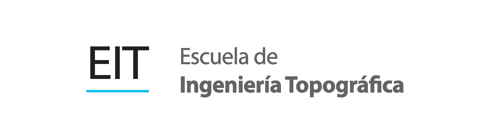
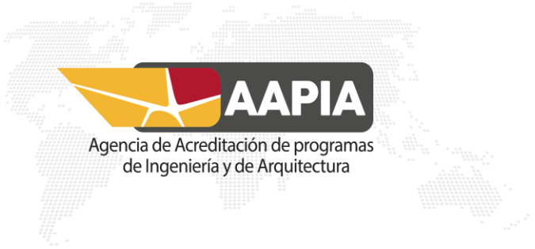

UNIVERSIDAD DE COSTA RICA

Este visor tiene como objetivo mostrar el resultado del proyecto de investigación 341B6784 "IDENTIFICACIÓN DE BANCOS DE NIVEL DEL IGN EN EL PAÍS"
Realizado por: Ing. Gabriela Cordero Gamboa y Ing. Gustavo Lara Morales.
Resumen ejecutivo del proyecto
En los años de 1940 a 1965 en el Instituto Geográfico Nacional se creó una red vertical de nivelación geométrica con Bancos de nivel con ayuda internacional. De esa red existe mucha información en los archivos análogos del IGN como los son valores de alturas niveladas, gravedad
y mapas escaneadas donde se presenta los nodos de los circuitos de nivelación.
Sin embargo, después de haber realizado las mediciones no se realizó ningún mantenimiento y por tanto a la fecha, se desconoce el estado y existencia de los Bancos de Nivel (BNs).
Por lo cual en el proyecto de investigación se planteó la necesidad de localizar y diagnosticar la información de esos hitos, debido a la gran relevancia que contienen para los trabajos geodésicos desde el punto de vista de referencia de verticalidad y que a la vez son el insumo para futuras mediciones de nivelación. Esto con la proyección futura de desarrollar un marco altimétrico unificado (nivelación ortométrica, gravedad) para lograr el cálculo de números geopotenciales.
El proyecto identificó los puntos existentes in situ a partir de las fichas análogas que tiene el IGN, y con los resultados obtenidos se desarrolló una base de datos con reseñas actualizadas de cada uno de ellos que puedan ser empleados como referencias públicas para los trabajos en diferentes campos de estudio a disposición de todos los usuarios de forma gratuita.
Tabla de datos Base de datos
NOTA: Si utiliza la información mostrada en este visor, debe citar como fuentes a la Universidad de Costa Rica la Escuela de Ingeniería Topográfica y a sus autores.
Visor Open Source de la Escuela de Ingeniería Topográfica (EIT).
Ing. Gustavo Lara Morales, MASIGTE. Contacto gustavo.lara@ucr.ac.cr
Ing. Gabriela Cordero Gamboa, MSc. Contacto gabriela.corderogamboa@ucr.ac.cr